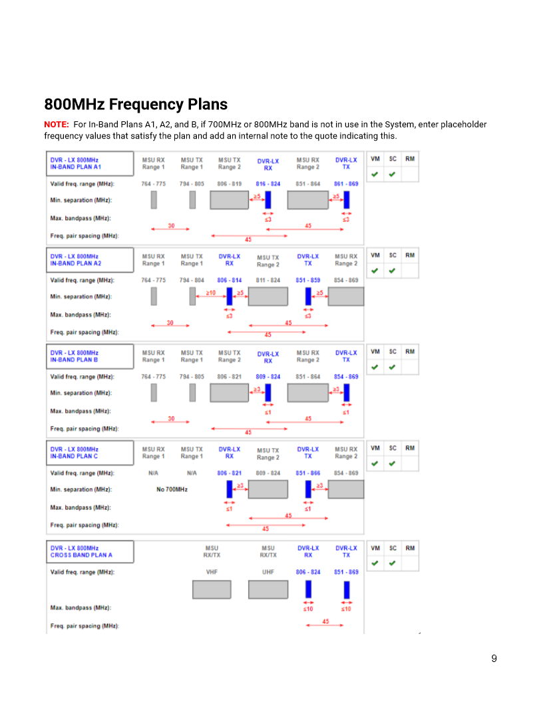

Input + system summary
System
Run an evaluation to see the detected band, system pairing, and assumptions.
Futurecom DVR-LX planning aid
Enter the mobile transmit range, review standard plan fit, and carry the preliminary proposal into an ordering summary.

Input + system summary
Standard configuration matrix
Ordering form summary